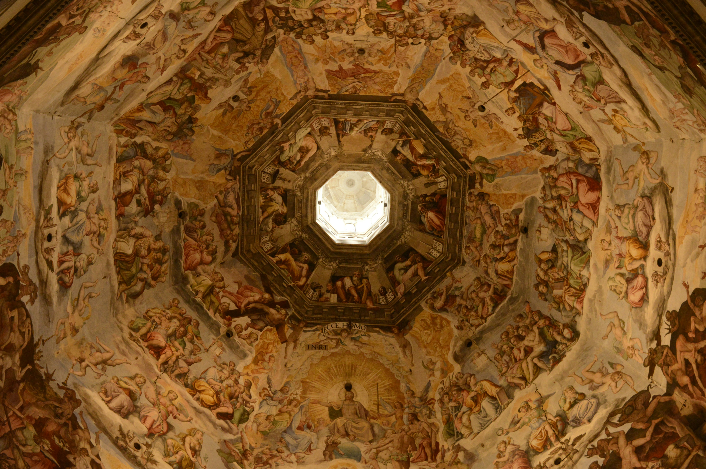

DISCOVERY FEED

An iconic skyscraper with stunning city views from the observatory. The high-speed elevator is impressive, and the architecture is a must-see. The mall at the base offers luxury shopping and great dining options. It can get crowded, and ticket prices are a bit steep, but overall, a worthwhile experience if you're visiting Taipei.

A breathtaking symbol of Florence with its iconic dome and intricate façade. Climbing to the top offers panoramic views of the city—very worth the hike! I will caution that the stairway up is quite claustrophobic. However, the interior is beautiful, though less ornate than the outside. Lines can be long, so booking in advance is a good idea.